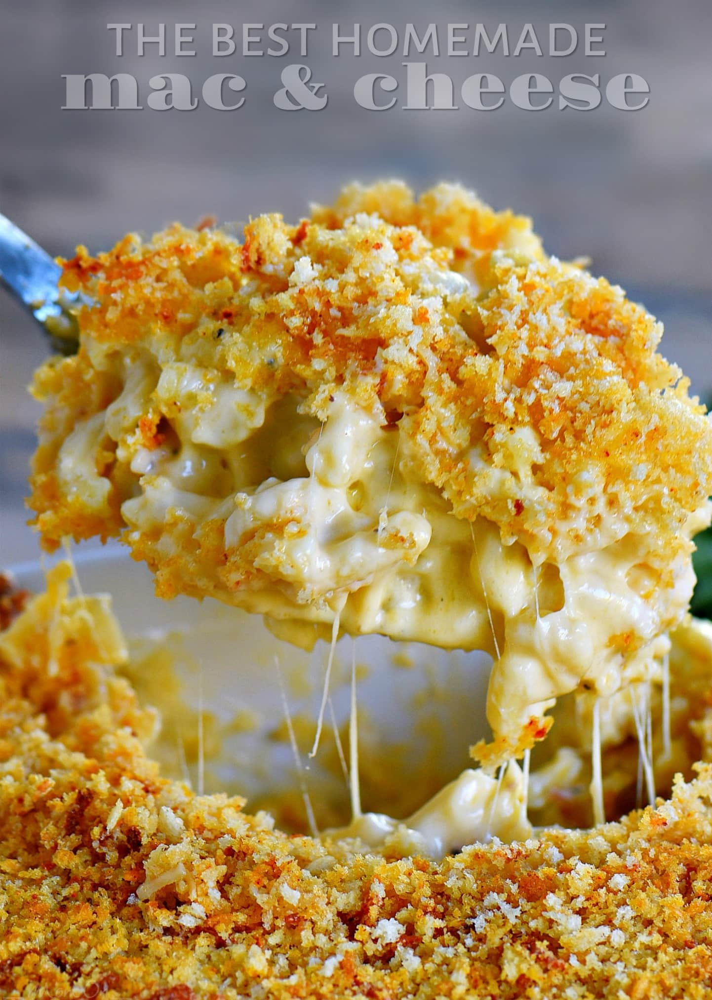

Creamy Baked Macaroni and Cheese

Homemade creamy baked macaroni and cheese
Who doesn't love a great tasting mac and cheese. This recipe will have the whole family wanting more.
Ingredients
- 16 oz of elbow macaroni, cooked (cellentani is my favorite noodles for this recipe)
- 6 tbsp of unsalted butter
- 1/3 cup of all purpose flour
- 3 cups whole milk
- 1 cup heavy whipping cream
- 4 cups of shredded sharp cheddar
- salt and pepper to taste
- 1/4 tsp paprika
- 1/4 tsp garlic powder
- 1/4 cups panko crumbs (optional)
Steps
- Preheat the oven to 350 degrees F. Lightly spray a 3qt baking dish and set it aside.
- Bring water to a boil and cook the pasta one minute shy of al dente.
- In a separate deep saucepan melt butter.
- Once butter is melted, whisk in flour over medium heat and continue to whisk for about 1 minute until bubbly and golden.
- Gradually whisk in the milk and heavy cream until nice and smooth. Continue to whisking until you see bubbles on the surface.
Continue whisking for another 2 minutes. Whisk in the salt, pepper, paprika, and garlic powder.
- Add the shredded cheese and whisk until smooth and creamy. The sauce should be nice and thick.
- Stir in the cooled pasta until it is fully combined and coated in the cheese sauce.
- Pour the mac and cheese into the baking dish and top with more cheese.
- Optional, sprinkle panko crumbs over the top of the mac and cheese. Bake for 30 minutes until golden brown and bubbly. Serve immediately.